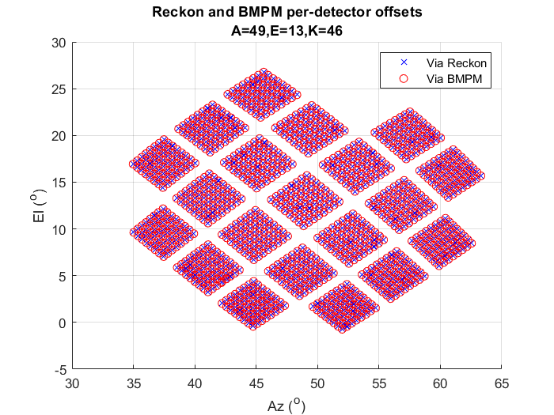
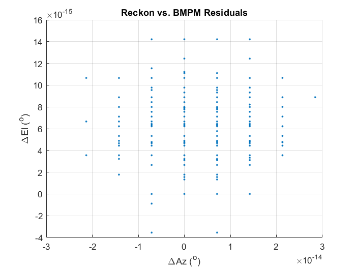
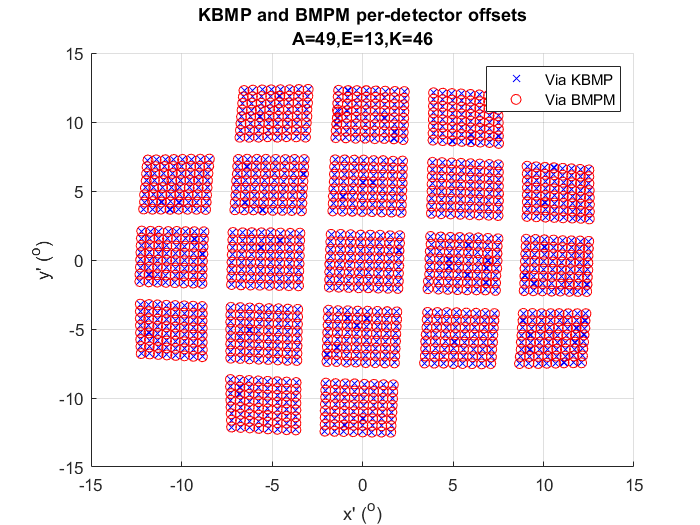
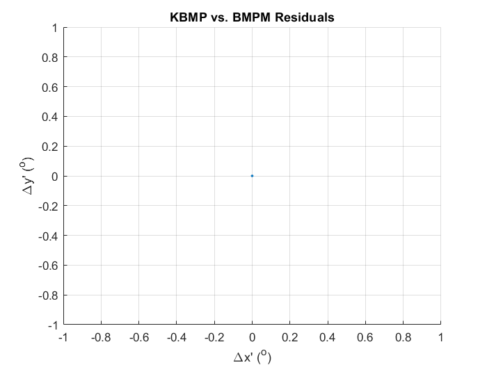
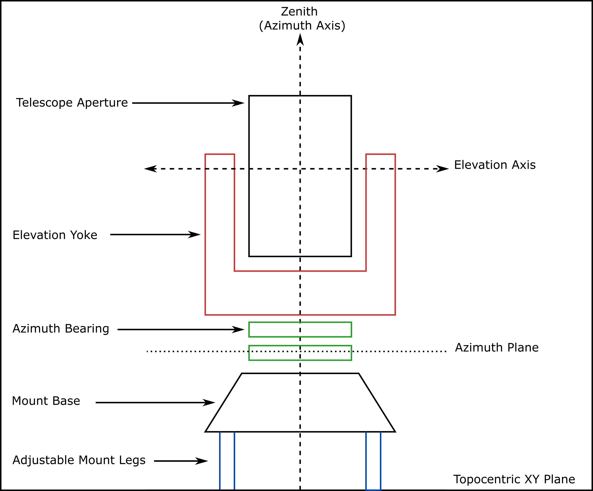

In most analyses in which we need to locate/orient a source in an instrument-fixed coordinate system (e.g. FFBM, RPS, FSL), the procedure to create beam maps from raw data is essentially the same:
Convert Raw Mount Coordinates $(A_0,E_0,K_0)$ into topocentric ideal horizontal coordinates $(A,E,K)$ .
Uses invpointing_model.m with star pointing model as an additional input.
Where $x'/y'$ are the detector-centered cartesian analogues of $r'/\theta'$ using Lambert azimuthal equal-area projection .
And $\phi'$ is the angle measured from the source orientation axis to the source polarization axis as projected onto the unit sphere.
The inverse pointing model (IPM) returns the horizontal coordinates of the mount boresight pointing as they are projected on to the local topocentric unit sphere.
As a result, if we have non-zero Az/El tilts, we can expect to see wide swings in Azimuth and Deck as the boresight approaches Zenith.
However, only these ideal coordinates are passed to the beam map pointing model and so we lose the knowledge of the physical orientation of the mount.
As can be seen in Figure 0.1, this can introduce large errors in the scan as projected into instrument-fixed coordinates as the pointing model blindly assumes that the orientation of the focal plane rapidly changes as well.
RPS Scans in Raw Mount Coordinates (top row), converted to ideal horizon coordaintes (bottom row, column 1 & 2) via invpointing_model and then converted into boresight-centered coordinates (bottom row, column 3) via keck_beam_map_pointing.
I've found that the standard method is to simply zero-out any Az/El tilts and move on. Most errors resulting in this decision are subdominant for most cases.
In the context of the measuring absolute polarization angles however, the measured tilts can affect us at the levels of precision we're interested in, so we can't just ignore them.
Simply put, we've been using these functions incorrectly, but we've been able to ignore the concequences until now. The problem is that neither pointing model adequately provides the functionality we need.
To fix that, we created a new function which moves the function of invpointing_model into keck_beam_map_pointing and named it beam_map_pointing_model.m (BMPM for short). We created this new function in lieu of just upgrading keck_beam_map_pointing to avoid breaking other analysis pipelines and also because the Keck prefix is a bit confusing since the experiment technically doesn't exist anymore. That said, BMPM is functionally similar to keck_beam_map_pointing -- the boresight pointing and orientation are transformed and rotated as vectors in a 3D cartesian space before being converted into the desired coordinates -- and uses all of the same subfunctions.
The new function:
\begin{equation}
[x',\,y',\,\phi'] = \text{beam_map_pointing_model}(A_{0},\,E_{0},\,K_{0},\,PM,\,Mount,\,Mirror,\,Source,\,FPU)
\end{equation}
Converts Raw Mount Coordinates $(A_0,E_0,K_0)$ directly to detector-centered coordinates $(x',y',\phi')$ or any intermediate coordinate system (e.g. $(A,E,K)$, $(x,y,\phi)$, etc...).
Takes offline pointing model ($PM$), mount, mirror, source, and focal plane ($FPU$) information as additional inputs.
One thing Colin points out in his original posting is that keck_beam_map_pointing doesn't apply mount tilts to the pointing of the mirror which we need to account for in instances where precision in the geometry is necessary (i.e. polarization angle analyses). Some of the keck_beam_map_pointing subfunctions have been updated, but have been done so in such a way that conserves backward compatibility.
kbmp_mirror now applies az/el tilts to the mirror normal.
kbmp_mount can now account for all of the offline pointing model parameters and can also account for the origin of az/el tilts as well.
kbmp_parallax_sph can now output x'/y'/phi' coordinates.
Below is the same set of scans from Figure 1.1, but run entirely through beam_map_pointing_model instead. Note the difference between the old and new methods in the what happens in ideal coordinates when the elevation moves past 90 degrees. This is because in invpointing_model elevations are wrapped between 0 and 90 but the shortcut that is taken to fix that is only accurate if no tilts are applied.
Same scans as Figure 1.1, but now with 'Applied (New)' the pointing correction is now done through beam_map_pointing_model.m.
It's impossible to see the changes between 'None' and 'New' in the figure above. To get a better idea of how this impacts our absolute pointing, I computed the detector-centered coordinates of an arbitrary source using BICEP3's CMB-derived beam centers with and without tilts applied. Any differences in the pointing or orientation axis is the level of potential bias that this impinged on our analysis.
CMB derived beam center residuals using some abritrary mirror and source positions with and without tilts applied.
We can see that the difference in the pointing is relatively small (compared to a statistical error of ~0.01° from ). The difference in the orientation however which is ~0.02° is at the level that we care about for absolute polarization calibration (see Table 2 of the SPIE Paper) and so the tilts can't simply be ignored for this type of analysis.
Code Tests
This section compares BMPM to the other pointing model functions to ensure I didn't introduce any weird bugs.
BMPM vs. IPM
Below I compare the outputs of beam_map_pointing_model to invpointing_model.m and keck_beam_map_pointing.m to show that the internal mechanics are functionally unchanged. Comparison is accomplished simply by passing no mirror or source parameters to beam_map_pointing_model[1]. For most cases, the residuals are close to (but not quite) machine precision.
The caption.
Note that the residuals are relatively high for any non-zero combination of Az tilt Lat/HA. It's not clear to me why that is. Regardless, the actual Az tilt lat/HA's from star pointing are much smaller (<0.5 arcmin) and the residuals are O($10^{-9}$ °) at most so we should be okay to proceed.
BMPM vs. Reckon
The per-detector ideal horizontal coordinates are calculated by passing the output of invpointing_model.m to MATLAB's reckon.m. Similar to the previous section this is done by passing only the pointing model parameters and FPU data to the BMPM[1].


BMPM vs. KBMP
Lastly, assuming zeros for all offline pointing model parameters, the output for BMPM and keck_beam_map_pointing should be identical, regardless of the other inputs. The figures below show the x'/y' coordinates returned by both codes for some arbitrary mount, mirror, and source parameters.


Physical tilt origins
Because we use nearby terrestrial sources, we account for parallactic effects and thus may need to consider the origin of the tilts as well since they affect the position of the aperture and mirror. Listed below are some possible cases that I've come up with.
Azimuth Tilt
Lower Az Bearing Race: This could result from a thickness gradient in the lower race of the Azimuth bearing.
Tilted Base: This could be anywhere below the bearing ranging from the feet of the mount (pictured in Fig. 2.7) to the tilt of the entire building.
Elevation Tilt
Upper Az Bearing Race: Thickness gradients in the upper race of the Az bearing.
Elevation Bearings: Difference in heights between the rotational axis of the elevation bearings.
In keck_beam_map_pointing, the tilts originate at the origin of the cartesian coordinate system which was arbitrarily defined to be at the floor of the groundshield.

Pager showing different scenarios in which Azimuth and Elevation Tilts can occur.
How much does this actually matter though? At worst, we're dealing with systematic errors on the location of the aperture/mirror of roughly <6 cm.
The worst-case scenarios are listed below for a source that is ~200m away. The upper limit on the resulting bias on a derived mirror roll, which impinges a roughly one-to-one bias on polarization angles, is on the order of 0.02°. BUT the direction of the real tilts may serve to cancel-out some effects. So while not immediately worrying for RPS analysis, this may need further investigation in the future. For now, we place the origin of the Azimuth tilt at the base of the telescope and the origin of the Elevation tilt at elevation axis.
Tilt Dir.
Case
Tilt (from Starpointing) (°)
Roll Bias (°)
Angle Bias (°)
Az HA
Tilted Building (<20m)
~0.003
~0.02
~0.02
El HA
Upper Az bearing (<4m)
~-0.03
~-0.03
~-0.03
I should note that for Far-sidelobe measurements where the source is very close, this effect may not only be much more significant but one might need to consider whether the source and mount are affected by the same tilt or not (tilted bearing vs a tilted building, say). Though in reality, we likely won't need precision in FSL mapping to this precision for some time.
Appendix
Additional Applications
While the primary function of the BMPM is to convert pointing into instrument-fixed coordinates, it is possible to utilize this function to convert your pointing into a number of intermediate coordinate systems by passing empty arrays $([\,])\,$ as arguments instead.
Ideal Horizonal Coordinates:
\begin{equation}
[A,\,E,\,PA] = \text{beam_map_pointing_model}(A_{0},\,E_{0},\,K_{0},\,PM,\,[\,],\,[\,],\,[\,],\,[\,])
\end{equation}
Where $PA$ is the parallactic angle measured from the boresight orientation vector to the great circle connecting the boresight pointing to zenith. From our definition of Deck, $K = 90^\circ-PA$.
This option is equivalent to invpointing_model.m.
Per-Detector Ideal Horizontal Coordinates:
\begin{equation}
[A_d,\,E_d,\,PA_d] = \text{beam_map_pointing_model}(A_{0},\,E_{0},\,K_{0},\,PM,\,[\,],\,[\,],\,[\,],\,FPU)
\end{equation}
This is equivalent to passing the output from invpointing_model.m into MATLAB's reckon.m.
Below is a list of code that was used for this analysis. The entries under pipeline code is committed to the pipeline and can be found in the designated directories. Those under posting code can be found in the scripts/ directory of this posting.